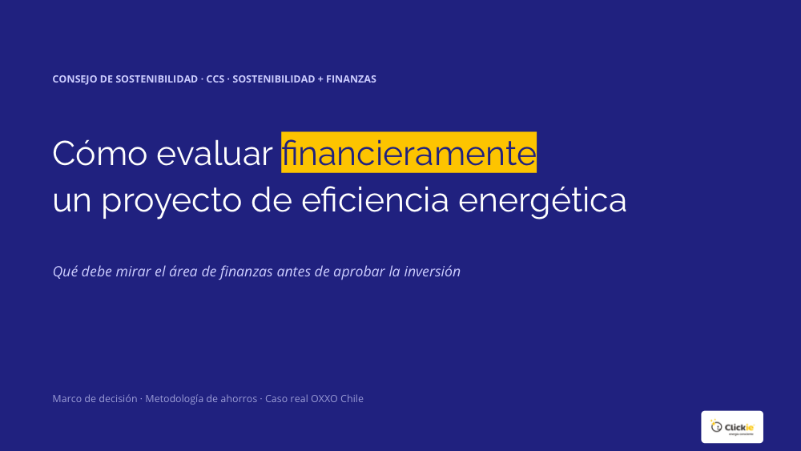

Cómo evaluar financieramente un proyecto de eficiencia energética. Lo que el área de finanzas debe mirar antes de aprobar la inversión: marco de decisión, metodología de ahorros y el caso real de OXXO Chile.

Recibirás el documento directamente en tu correo de empresa.